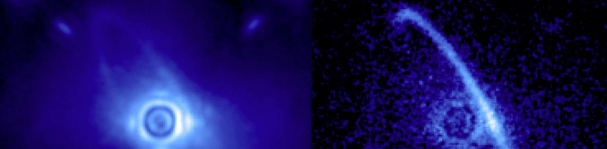

The Gemini Planet Imager
May 9, 2014

I recently did another interview for the Naked Scientists about a press release that caught their eye: the Gemini Planet Imager’s first light. Gemini Planet Imager, or GPI, is an instrument for direct imaging of exoplanets that is billed as “the world’s most powerful exoplanet camera.” The telescope itself is on a mountain at about 9000 ft in the Chilean Andes, and the instrument has hit the news recently due to some of the first images that have been released from it. It captured its first portrait of an exoplanet shortly after it was installed in November.
Below are a few of the notes I made before the interview.
What’s an “instrument”?
Observatories are complicated beasts - they take up land, they need to be built high up in places where it’s clear, they need power and support staff and roads, and the engineering required for the telescope itself (even the mirrors cost a massive amount!) is expensive.
So, when astronomers build telescopes, especially ones that deal with light in the visible or near-visible like this one, they want to get as much use out of them as possible. This is done by having different “instruments” on each telescope which can be swapped out. I’m sure you’re familiar with fancy DSLR cameras that have different lenses. Well, this is like that except in reverse. You swap out the back of the camera and leave the optics in place… and now your camera has a different set of capabilities.
Who built it?
A whole consortium of US and Canadian universities and organisations (examples: the University of Toronto, NASA Ames research centre, several universities in the University of California system…) Usually in a project like this, different organisations will contribute different expertise, either on the technical end of things (making stuff) or on the operational end.
How much did it cost?
I don’t really know! Costs for instruments like these can run into the hundreds of thousands or millions of pounds because they involve a sustained engineering effort over a long time, but I wasn’t able to find a single number anywhere.
What makes it special?
GPI is a direct imaging instrument, which means it is designed to take high-contrast images of planets around stars by blocking out the light from the star. This is not easy! The stars can be millions of times brighter than the planet, since we only see the planet due to reflected light from the star anyway. And the angles involved are tiny, comparable to the width of a human hair at the end of a football field. Direct imaging is only feasible right now for large (Jupiter-sized) planets at large distances from their host star.
GPI isn’t the only direct imaging camera out there. For example, it’s similar to Project 1640, a project that the Institute of Astronomy is involved in.
More details
For more information, you can listen to the interview here or read a transcript here—although I should point out that the latter has some errors. (Maybe it was made using speech recognition software.)